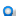
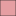

<!doctype html>
<html lang="en">
    <head>
        <meta charset="utf-8">
        <meta http-equiv="X-UA-Compatible" content="IE=edge">
        <meta name="viewport" content="initial-scale=1,user-scalable=no,maximum-scale=1,width=device-width">
        <meta name="mobile-web-app-capable" content="yes">
        <meta name="apple-mobile-web-app-capable" content="yes">
        <link rel="stylesheet" href="css/leaflet.css">
        <link rel="stylesheet" href="css/qgis2web.css"><link rel="stylesheet" href="css/fontawesome-all.min.css">
        <style>
        html, body, #map {
            width: 100%;
            height: 100%;
            padding: 0;
            margin: 0;
        }
        </style>
        <title>Mapa interativo - FOCER</title>
    </head>
    <body>
        <div id="map">
        </div>
        <script src="js/qgis2web_expressions.js"></script>
        <script src="js/leaflet.js"></script>
        <script src="js/leaflet.rotatedMarker.js"></script>
        <script src="js/leaflet.pattern.js"></script>
        <script src="js/leaflet-hash.js"></script>
        <script src="js/Autolinker.min.js"></script>
        <script src="js/rbush.min.js"></script>
        <script src="js/labelgun.min.js"></script>
        <script src="js/labels.js"></script>
        <script src="data/SistemaAquferoUrucuiaSAU_3.js"></script>
        <script src="data/BaciarioGrande_4.js"></script>
        <script src="data/BaciadorioCorrente_5.js"></script>
        <script src="data/Limitesestaduais_6.js"></script>
        <script src="data/HidrografiaRioGrande_7.js"></script>
        <script src="data/HidrografiaRioCorrente_8.js"></script>
        <script src="data/EstaesfluviomtricasANA_9.js"></script>
        <script>
        var map = L.map('map', {
            zoomControl:true, maxZoom:28, minZoom:1
        }).fitBounds([[-15.469515116517666,-48.13208215763123],[-9.315920043462658,-39.972282534902114]]);
        var hash = new L.Hash(map);
        map.attributionControl.setPrefix('<a href="https://github.com/tomchadwin/qgis2web" target="_blank">qgis2web</a> &middot; <a href="https://leafletjs.com" title="A JS library for interactive maps">Leaflet</a> &middot; <a href="https://qgis.org">QGIS</a>');
        var autolinker = new Autolinker({truncate: {length: 30, location: 'smart'}});
        var bounds_group = new L.featureGroup([]);
        function setBounds() {
        }
        map.createPane('pane_GoogleHybrid_0');
        map.getPane('pane_GoogleHybrid_0').style.zIndex = 400;
        var layer_GoogleHybrid_0 = L.tileLayer('https://mt1.google.com/vt/lyrs=y&x={x}&y={y}&z={z}', {
            pane: 'pane_GoogleHybrid_0',
            opacity: 1.0,
            attribution: '<a href="https://www.google.at/permissions/geoguidelines/attr-guide.html">Map data ©2015 Google</a>',
            minZoom: 1,
            maxZoom: 28,
            minNativeZoom: 0,
            maxNativeZoom: 20
        });
        layer_GoogleHybrid_0;
        map.createPane('pane_GoogleTerrain_1');
        map.getPane('pane_GoogleTerrain_1').style.zIndex = 401;
        var layer_GoogleTerrain_1 = L.tileLayer('https://mt1.google.com/vt/lyrs=p&x={x}&y={y}&z={z}', {
            pane: 'pane_GoogleTerrain_1',
            opacity: 1.0,
            attribution: '<a href="https://www.google.at/permissions/geoguidelines/attr-guide.html">Map data ©2015 Google</a>',
            minZoom: 1,
            maxZoom: 28,
            minNativeZoom: 0,
            maxNativeZoom: 20
        });
        layer_GoogleTerrain_1;
        map.createPane('pane_GoogleSatellite_2');
        map.getPane('pane_GoogleSatellite_2').style.zIndex = 402;
        var layer_GoogleSatellite_2 = L.tileLayer('https://mt1.google.com/vt/lyrs=s&x={x}&y={y}&z={z}', {
            pane: 'pane_GoogleSatellite_2',
            opacity: 1.0,
            attribution: '<a href="https://www.google.at/permissions/geoguidelines/attr-guide.html">Map data ©2015 Google</a>',
            minZoom: 1,
            maxZoom: 28,
            minNativeZoom: 0,
            maxNativeZoom: 20
        });
        layer_GoogleSatellite_2;
        map.addLayer(layer_GoogleSatellite_2);
        function pop_SistemaAquferoUrucuiaSAU_3(feature, layer) {
            var popupContent = '<table>\
                    <tr>\
                        <td colspan="2">' + (feature.properties['OBJECTID'] !== null ? autolinker.link(feature.properties['OBJECTID'].toLocaleString()) : '') + '</td>\
                    </tr>\
                    <tr>\
                        <td colspan="2">' + (feature.properties['Sub_Bacia'] !== null ? autolinker.link(feature.properties['Sub_Bacia'].toLocaleString()) : '') + '</td>\
                    </tr>\
                    <tr>\
                        <td colspan="2">' + (feature.properties['Shape_Leng'] !== null ? autolinker.link(feature.properties['Shape_Leng'].toLocaleString()) : '') + '</td>\
                    </tr>\
                    <tr>\
                        <td colspan="2">' + (feature.properties['Shape_Area'] !== null ? autolinker.link(feature.properties['Shape_Area'].toLocaleString()) : '') + '</td>\
                    </tr>\
                    <tr>\
                        <td colspan="2">' + (feature.properties['Observacao'] !== null ? autolinker.link(feature.properties['Observacao'].toLocaleString()) : '') + '</td>\
                    </tr>\
                </table>';
            layer.bindPopup(popupContent, {maxHeight: 400});
        }

        function style_SistemaAquferoUrucuiaSAU_3_0() {
            return {
                pane: 'pane_SistemaAquferoUrucuiaSAU_3',
                opacity: 1,
                color: 'rgba(35,35,35,1.0)',
                dashArray: '',
                lineCap: 'butt',
                lineJoin: 'miter',
                weight: 1.0, 
                fill: true,
                fillOpacity: 1,
                fillColor: 'rgba(219,119,123,1.0)',
                interactive: false,
            }
        }
        map.createPane('pane_SistemaAquferoUrucuiaSAU_3');
        map.getPane('pane_SistemaAquferoUrucuiaSAU_3').style.zIndex = 403;
        map.getPane('pane_SistemaAquferoUrucuiaSAU_3').style['mix-blend-mode'] = 'normal';
        var layer_SistemaAquferoUrucuiaSAU_3 = new L.geoJson(json_SistemaAquferoUrucuiaSAU_3, {
            attribution: '',
            interactive: false,
            dataVar: 'json_SistemaAquferoUrucuiaSAU_3',
            layerName: 'layer_SistemaAquferoUrucuiaSAU_3',
            pane: 'pane_SistemaAquferoUrucuiaSAU_3',
            onEachFeature: pop_SistemaAquferoUrucuiaSAU_3,
            style: style_SistemaAquferoUrucuiaSAU_3_0,
        });
        bounds_group.addLayer(layer_SistemaAquferoUrucuiaSAU_3);
        function pop_BaciarioGrande_4(feature, layer) {
            var popupContent = '<table>\
                    <tr>\
                        <td colspan="2">' + (feature.properties['nunivotto3'] !== null ? autolinker.link(feature.properties['nunivotto3'].toLocaleString()) : '') + '</td>\
                    </tr>\
                </table>';
            layer.bindPopup(popupContent, {maxHeight: 400});
        }

        function style_BaciarioGrande_4_0() {
            return {
                pane: 'pane_BaciarioGrande_4',
                opacity: 1,
                color: 'rgba(254,0,127,1.0)',
                dashArray: '',
                lineCap: 'butt',
                lineJoin: 'miter',
                weight: 2.0, 
                fill: true,
                fillOpacity: 1,
                fillColor: 'rgba(246,226,180,0.0)',
                interactive: false,
            }
        }
        map.createPane('pane_BaciarioGrande_4');
        map.getPane('pane_BaciarioGrande_4').style.zIndex = 404;
        map.getPane('pane_BaciarioGrande_4').style['mix-blend-mode'] = 'normal';
        var layer_BaciarioGrande_4 = new L.geoJson(json_BaciarioGrande_4, {
            attribution: '',
            interactive: false,
            dataVar: 'json_BaciarioGrande_4',
            layerName: 'layer_BaciarioGrande_4',
            pane: 'pane_BaciarioGrande_4',
            onEachFeature: pop_BaciarioGrande_4,
            style: style_BaciarioGrande_4_0,
        });
        bounds_group.addLayer(layer_BaciarioGrande_4);
        map.addLayer(layer_BaciarioGrande_4);
        function pop_BaciadorioCorrente_5(feature, layer) {
            var popupContent = '<table>\
                    <tr>\
                        <td colspan="2">' + (feature.properties['nunivotto3'] !== null ? autolinker.link(feature.properties['nunivotto3'].toLocaleString()) : '') + '</td>\
                    </tr>\
                </table>';
            layer.bindPopup(popupContent, {maxHeight: 400});
        }

        function style_BaciadorioCorrente_5_0() {
            return {
                pane: 'pane_BaciadorioCorrente_5',
                opacity: 1,
                color: 'rgba(229,182,54,1.0)',
                dashArray: '',
                lineCap: 'butt',
                lineJoin: 'miter',
                weight: 2.0, 
                fill: true,
                fillOpacity: 1,
                fillColor: 'rgba(229,182,54,0.0)',
                interactive: false,
            }
        }
        map.createPane('pane_BaciadorioCorrente_5');
        map.getPane('pane_BaciadorioCorrente_5').style.zIndex = 405;
        map.getPane('pane_BaciadorioCorrente_5').style['mix-blend-mode'] = 'normal';
        var layer_BaciadorioCorrente_5 = new L.geoJson(json_BaciadorioCorrente_5, {
            attribution: '',
            interactive: false,
            dataVar: 'json_BaciadorioCorrente_5',
            layerName: 'layer_BaciadorioCorrente_5',
            pane: 'pane_BaciadorioCorrente_5',
            onEachFeature: pop_BaciadorioCorrente_5,
            style: style_BaciadorioCorrente_5_0,
        });
        bounds_group.addLayer(layer_BaciadorioCorrente_5);
        map.addLayer(layer_BaciadorioCorrente_5);
        function pop_Limitesestaduais_6(feature, layer) {
            var popupContent = '<table>\
                    <tr>\
                        <td colspan="2"><strong>ESTADOS</strong><br />' + (feature.properties['ESTADOS'] !== null ? autolinker.link(feature.properties['ESTADOS'].toLocaleString()) : '') + '</td>\
                    </tr>\
                    <tr>\
                        <td colspan="2">' + (feature.properties['REGIAO'] !== null ? autolinker.link(feature.properties['REGIAO'].toLocaleString()) : '') + '</td>\
                    </tr>\
                    <tr>\
                        <td colspan="2">' + (feature.properties['COD_UF'] !== null ? autolinker.link(feature.properties['COD_UF'].toLocaleString()) : '') + '</td>\
                    </tr>\
                    <tr>\
                        <td colspan="2">' + (feature.properties['UF'] !== null ? autolinker.link(feature.properties['UF'].toLocaleString()) : '') + '</td>\
                    </tr>\
                </table>';
            layer.bindPopup(popupContent, {maxHeight: 400});
        }

        function style_Limitesestaduais_6_0() {
            return {
                pane: 'pane_Limitesestaduais_6',
                opacity: 1,
                color: 'rgba(162,162,162,1.0)',
                dashArray: '',
                lineCap: 'butt',
                lineJoin: 'miter',
                weight: 1.0, 
                fill: true,
                fillOpacity: 1,
                fillColor: 'rgba(212,212,212,0.0)',
                interactive: false,
            }
        }
        map.createPane('pane_Limitesestaduais_6');
        map.getPane('pane_Limitesestaduais_6').style.zIndex = 406;
        map.getPane('pane_Limitesestaduais_6').style['mix-blend-mode'] = 'normal';
        var layer_Limitesestaduais_6 = new L.geoJson(json_Limitesestaduais_6, {
            attribution: '',
            interactive: false,
            dataVar: 'json_Limitesestaduais_6',
            layerName: 'layer_Limitesestaduais_6',
            pane: 'pane_Limitesestaduais_6',
            onEachFeature: pop_Limitesestaduais_6,
            style: style_Limitesestaduais_6_0,
        });
        bounds_group.addLayer(layer_Limitesestaduais_6);
        function pop_HidrografiaRioGrande_7(feature, layer) {
            var popupContent = '<table>\
                    <tr>\
                        <td colspan="2">' + (feature.properties['IDRIO'] !== null ? autolinker.link(feature.properties['IDRIO'].toLocaleString()) : '') + '</td>\
                    </tr>\
                    <tr>\
                        <td colspan="2">' + (feature.properties['CORIO'] !== null ? autolinker.link(feature.properties['CORIO'].toLocaleString()) : '') + '</td>\
                    </tr>\
                    <tr>\
                        <td colspan="2">' + (feature.properties['NORIOCOMP'] !== null ? autolinker.link(feature.properties['NORIOCOMP'].toLocaleString()) : '') + '</td>\
                    </tr>\
                    <tr>\
                        <td colspan="2">' + (feature.properties['NUDISTBACR'] !== null ? autolinker.link(feature.properties['NUDISTBACR'].toLocaleString()) : '') + '</td>\
                    </tr>\
                    <tr>\
                        <td colspan="2">' + (feature.properties['NUCOMPRIO'] !== null ? autolinker.link(feature.properties['NUCOMPRIO'].toLocaleString()) : '') + '</td>\
                    </tr>\
                    <tr>\
                        <td colspan="2">' + (feature.properties['DSVERSAO'] !== null ? autolinker.link(feature.properties['DSVERSAO'].toLocaleString()) : '') + '</td>\
                    </tr>\
                </table>';
            layer.bindPopup(popupContent, {maxHeight: 400});
        }

        function style_HidrografiaRioGrande_7_0() {
            return {
                pane: 'pane_HidrografiaRioGrande_7',
                opacity: 1,
                color: 'rgba(31,120,180,1.0)',
                dashArray: '',
                lineCap: 'square',
                lineJoin: 'bevel',
                weight: 1.0,
                fillOpacity: 0,
                interactive: false,
            }
        }
        map.createPane('pane_HidrografiaRioGrande_7');
        map.getPane('pane_HidrografiaRioGrande_7').style.zIndex = 407;
        map.getPane('pane_HidrografiaRioGrande_7').style['mix-blend-mode'] = 'normal';
        var layer_HidrografiaRioGrande_7 = new L.geoJson(json_HidrografiaRioGrande_7, {
            attribution: '',
            interactive: false,
            dataVar: 'json_HidrografiaRioGrande_7',
            layerName: 'layer_HidrografiaRioGrande_7',
            pane: 'pane_HidrografiaRioGrande_7',
            onEachFeature: pop_HidrografiaRioGrande_7,
            style: style_HidrografiaRioGrande_7_0,
        });
        bounds_group.addLayer(layer_HidrografiaRioGrande_7);
        map.addLayer(layer_HidrografiaRioGrande_7);
        function pop_HidrografiaRioCorrente_8(feature, layer) {
            var popupContent = '<table>\
                    <tr>\
                        <td colspan="2">' + (feature.properties['IDRIO'] !== null ? autolinker.link(feature.properties['IDRIO'].toLocaleString()) : '') + '</td>\
                    </tr>\
                    <tr>\
                        <td colspan="2">' + (feature.properties['CORIO'] !== null ? autolinker.link(feature.properties['CORIO'].toLocaleString()) : '') + '</td>\
                    </tr>\
                    <tr>\
                        <td colspan="2">' + (feature.properties['NORIOCOMP'] !== null ? autolinker.link(feature.properties['NORIOCOMP'].toLocaleString()) : '') + '</td>\
                    </tr>\
                    <tr>\
                        <td colspan="2">' + (feature.properties['NUDISTBACR'] !== null ? autolinker.link(feature.properties['NUDISTBACR'].toLocaleString()) : '') + '</td>\
                    </tr>\
                    <tr>\
                        <td colspan="2">' + (feature.properties['NUCOMPRIO'] !== null ? autolinker.link(feature.properties['NUCOMPRIO'].toLocaleString()) : '') + '</td>\
                    </tr>\
                    <tr>\
                        <td colspan="2">' + (feature.properties['DSVERSAO'] !== null ? autolinker.link(feature.properties['DSVERSAO'].toLocaleString()) : '') + '</td>\
                    </tr>\
                </table>';
            layer.bindPopup(popupContent, {maxHeight: 400});
        }

        function style_HidrografiaRioCorrente_8_0() {
            return {
                pane: 'pane_HidrografiaRioCorrente_8',
                opacity: 1,
                color: 'rgba(31,120,180,1.0)',
                dashArray: '',
                lineCap: 'square',
                lineJoin: 'bevel',
                weight: 1.0,
                fillOpacity: 0,
                interactive: false,
            }
        }
        map.createPane('pane_HidrografiaRioCorrente_8');
        map.getPane('pane_HidrografiaRioCorrente_8').style.zIndex = 408;
        map.getPane('pane_HidrografiaRioCorrente_8').style['mix-blend-mode'] = 'normal';
        var layer_HidrografiaRioCorrente_8 = new L.geoJson(json_HidrografiaRioCorrente_8, {
            attribution: '',
            interactive: false,
            dataVar: 'json_HidrografiaRioCorrente_8',
            layerName: 'layer_HidrografiaRioCorrente_8',
            pane: 'pane_HidrografiaRioCorrente_8',
            onEachFeature: pop_HidrografiaRioCorrente_8,
            style: style_HidrografiaRioCorrente_8_0,
        });
        bounds_group.addLayer(layer_HidrografiaRioCorrente_8);
        map.addLayer(layer_HidrografiaRioCorrente_8);
        function pop_EstaesfluviomtricasANA_9(feature, layer) {
            var popupContent = '<table>\
                    <tr>\
                        <th scope="row">Código:</th>\
                        <td>' + (feature.properties['Código:'] !== null ? autolinker.link(feature.properties['Código:'].toLocaleString()) : '') + '</td>\
                    </tr>\
                    <tr>\
                        <th scope="row">Latitude:</th>\
                        <td>' + (feature.properties['Latitude:'] !== null ? autolinker.link(feature.properties['Latitude:'].toLocaleString()) : '') + '</td>\
                    </tr>\
                    <tr>\
                        <th scope="row">Longitude:</th>\
                        <td>' + (feature.properties['Longitude:'] !== null ? autolinker.link(feature.properties['Longitude:'].toLocaleString()) : '') + '</td>\
                    </tr>\
                    <tr>\
                        <th scope="row">Rio:</th>\
                        <td>' + (feature.properties['Rio:'] !== null ? autolinker.link(feature.properties['Rio:'].toLocaleString()) : '') + '</td>\
                    </tr>\
                    <tr>\
                        <th scope="row">Área (km²):</th>\
                        <td>' + (feature.properties['Área (km²):'] !== null ? autolinker.link(feature.properties['Área (km²):'].toLocaleString()) : '') + '</td>\
                    </tr>\
                    <tr>\
                        <th scope="row">Recessão adotada:</th>\
                        <td>' + (feature.properties['Recessão adotada:'] !== null ? autolinker.link(feature.properties['Recessão adotada:'].toLocaleString()) : '') + '</td>\
                    </tr>\
                    <tr>\
                        <th scope="row">Parâmetro α:</th>\
                        <td>' + (feature.properties['Parâmetro α:'] !== null ? autolinker.link(feature.properties['Parâmetro α:'].toLocaleString()) : '') + '</td>\
                    </tr>\
                    <tr>\
                        <th scope="row">Parâmetro BFImax:</th>\
                        <td>' + (feature.properties['Parâmetro BFImax:'] !== null ? autolinker.link(feature.properties['Parâmetro BFImax:'].toLocaleString()) : '') + '</td>\
                    </tr>\
                </table>';
            layer.bindPopup(popupContent, {maxHeight: 400});
        }

        function style_EstaesfluviomtricasANA_9_0() {
            return {
                pane: 'pane_EstaesfluviomtricasANA_9',
        rotationAngle: 0.0,
        rotationOrigin: 'center center',
        icon: L.icon({
            iconUrl: 'markers/blue-marker.svg',
            iconSize: [30.4, 30.4]
        }),
                interactive: true,
            }
        }
        map.createPane('pane_EstaesfluviomtricasANA_9');
        map.getPane('pane_EstaesfluviomtricasANA_9').style.zIndex = 409;
        map.getPane('pane_EstaesfluviomtricasANA_9').style['mix-blend-mode'] = 'normal';
        var layer_EstaesfluviomtricasANA_9 = new L.geoJson(json_EstaesfluviomtricasANA_9, {
            attribution: '',
            interactive: true,
            dataVar: 'json_EstaesfluviomtricasANA_9',
            layerName: 'layer_EstaesfluviomtricasANA_9',
            pane: 'pane_EstaesfluviomtricasANA_9',
            onEachFeature: pop_EstaesfluviomtricasANA_9,
            pointToLayer: function (feature, latlng) {
                var context = {
                    feature: feature,
                    variables: {}
                };
                return L.marker(latlng, style_EstaesfluviomtricasANA_9_0(feature));
            },
        });
        bounds_group.addLayer(layer_EstaesfluviomtricasANA_9);
        map.addLayer(layer_EstaesfluviomtricasANA_9);
            var title = new L.Control();
            title.onAdd = function (map) {
                this._div = L.DomUtil.create('div', 'info');
                this.update();
                return this._div;
            };
            title.update = function () {
                this._div.innerHTML = '<h2>Mapa interativo - FOCER</h2>';
            };
            title.addTo(map);
        var baseMaps = {};
        L.control.layers(baseMaps,{' Estações fluviométricas - ANA': layer_EstaesfluviomtricasANA_9,' Hidrografia - Rio Corrente': layer_HidrografiaRioCorrente_8,' Hidrografia - Rio Grande': layer_HidrografiaRioGrande_7,' Limites estaduais': layer_Limitesestaduais_6,' Bacia do rio Corrente': layer_BaciadorioCorrente_5,' Bacia rio Grande': layer_BaciarioGrande_4,' Sistema Aquífero Urucuia (SAU)': layer_SistemaAquferoUrucuiaSAU_3,"Google Satellite": layer_GoogleSatellite_2,"Google Terrain": layer_GoogleTerrain_1,"Google Hybrid": layer_GoogleHybrid_0,}).addTo(map);
        setBounds();
        var i = 0;
        layer_Limitesestaduais_6.eachLayer(function(layer) {
            var context = {
                feature: layer.feature,
                variables: {}
            };
            layer.bindTooltip((layer.feature.properties['ESTADOS'] !== null?String('<div style="color: #000000; font-size: 10pt; font-family: \'MS Shell Dlg 2\', sans-serif;">' + layer.feature.properties['ESTADOS']) + '</div>':''), {permanent: true, offset: [-0, -16], className: 'css_Limitesestaduais_6'});
            labels.push(layer);
            totalMarkers += 1;
              layer.added = true;
              addLabel(layer, i);
              i++;
        });
        resetLabels([layer_Limitesestaduais_6]);
        map.on("zoomend", function(){
            resetLabels([layer_Limitesestaduais_6]);
        });
        map.on("layeradd", function(){
            resetLabels([layer_Limitesestaduais_6]);
        });
        map.on("layerremove", function(){
            resetLabels([layer_Limitesestaduais_6]);
        });
        </script>
    </body>
</html>
